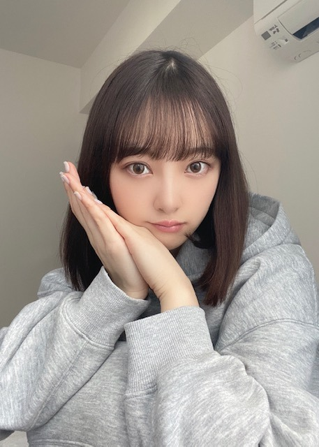

2020/0424Fri髪が伸びてきちゃいました
こんにちは



ずっとおうちにいるので
部屋着は色々着てますが
なんだかんだパーカーにおちつきます☺︎
パーカー着たままパーカーをネットで買う日々
では!
すこしずつですが、質問に答えていきます
1000件以上のコメント、
最近メンバーと連絡取ってますか～？？
→もちろん！ビデオ電話したりします☺︎
ジェイソンステイサム主演の
おすすめの映画教えてください！
→たくさんありますが個人的には
MEG ザモンスターの時が圧倒的紳士で好きです
未央奈がメイクする時に1番こだわる
ポイントを教えてほしい
→コンプレックスをいかにメイクで
カバーするか、なので私の場合
・つり目を優しく見せるために
アイラインはたれ目風に長く引き
目尻のシャドウは優しいブラウンで統一
・ノーズシャドウで鼻筋をスッキリ見せる
・目の重心を下げるために上まつげはあげすぎない
・チークは丸く優しくいれる
・唇の血色ははっきりと
・アゴにシェーディングを入れて
鋭利な顎を短くみせる
・頬骨のところにハイライト
美の秘訣は⁇
→24時間、美を意識すること
美しいと感じるものを常に見たり
感じたりするようにしていて
今はお家にいるのでずっとネットサーフィンしてます
例えば
・かわいい人が出てるドラマや映画
・トキメクきらきらなメイク画像
・ハリウッドスターのドレスアップ画像
・絵画 特に水彩画
・おしゃれなインテリア画像
・世界中の美人の画像
・洋服 最近はレースグローブが好き
・ブランドのロゴ画像
・ヨーロッパの女の子のヘアアレンジ画像
・キラキラネイル
とか! 待ち受けは今はエルファニングさんと
オードリーヘップバーンさんのコラージュ画像で
モチベ上げてます
あとお休みの日でもメイク研究してみたり
ファッションショーしてみたり!
気になった美容法もとにかく試します❤︎
朝と夜お風呂に入る派ですか？
→夏は朝も入りますが基本、夜のみ!
洗い流しすぎてもいけないみたい
最近読んだ漫画は何でしょうか？
→たまのごほうび です
ハマりました
BUMP OF CHICKENさんの曲で何が好きですか？
→花の名
心が折れそうな時や、頑張る方向が
わからなくなってしまった時など、
どうやって自分自身を元気づけていますか？
→みんな辛い思いをしながら
頑張ってるんだから自分だけ...って
マイナスに考えず、踏ん張っています
でも時には自分に対して
優しくしてあげるのも大事かな
家にいる時間が多くて運動不足
になってきてるのですが、スタイルとか
体重の維持のためにしてることありますか？
→ダンス動画見ながらダンスしてます!
続きはまた答えます☺︎
またね
コメント(468)
未央奈はどんな髪型でも似合う
最近のMyブームは？
髪伸びてきましたね。
写真集発売頃には、当時の長さくらいですかね。
写真が可愛いです。
その目に見つめられたら幸せです。
綺麗な長い指も美しいです見惚れます。
癒しのコレクションが増えて幸せですよ。
パーカー姿が可愛くて可愛くて癒されます。
着飾ったドレスや衣装でなくても魅せてくれますね。
お揃いのパーカー欲しくなりますよ。
美の意識、沢山のアプローチからの意識づけは流石ですね。
更に可愛く美しくなろうとの努力は大変かと思いますが、そのおかげで自分達ファンはどれほど魅了され、救われて、癒されていることか。
感謝ですよ、ありがとうございます。
辛く苦しい時に、自己中にならず客観的にも捉え奮起する事は素敵ですね。世の中、自分だけではないことを悟るのは必然ですね。
あらゆる個々の集大成、繋がりが世の中を作ってますからね。
最近のおすすめプレイリストを聞きたいです。
更新ありがとうございました。
お身体にはお気をつけてくださいね。
頑張って行きましょう！
堀ちゃんは奇跡的にボリューミーなヘアを逆にうまく今見せてる状態だけど、ホンマどしたらこの悩ましい問題をステキにサクっと解決できようか
後1、2ヶ月は宣言延長やろから、もはやカラーは自分でやること腹括るとしても、髪はアメリカの男子学生寮みたいに自分（たち）ぢゃ切れんしなー
堀ちゃんなら何か妙案
可愛いんだから ( ´Д`)σ)Д`)ｺﾉｺﾉ 今でも未央ちゃん大好きだよ
写真めちゃくちゃ可愛いくて綺麗ですね！
あと、パーカーまじで似合いますね！！
いつも未央奈ちゃんのブログとか楽しみに課題頑張ってるよ‼︎
今私はインフルエンサー特訓中なのでもしよかったらポイント
とか教えてほしいな✨
難しいけど、勉強の集中力が上がるんだー
どんな未央奈ちゃんも可愛いし応援してます！
今日も大好きです。
パーカー楽ちんでだいすきなの同じで嬉しいです︎︎︎︎︎☺︎
未央奈ちゃんが常に美を追求してて、、その姿勢をほんとに尊敬してます❤︎
ボブでできるおすすめのヘアアレンジ教えて欲しいです！
いつもありがとうございます！
モバメの写真もとってもかわいかったです໒꒱· ﾟ
未央奈ちゃんかわいい～!!
髪伸びた未央奈ちゃんもステキだよ！
私もパーカー好きだな。
ところで、今パーカー何着あるの?
私は、灰色2着と、うす紫の3着!!
体調に気をつけて頑張ってね！
今日の1枚目の写真集一瞬絢音ちゃんかと思った笑笑
表情が似てる笑
おすすめの映画ドラマ更新してたらもっともっと教えて欲しいなー！未央奈の感性大好きだからいつも参考にしてるの！
いつも元気をもらっています！
髪の毛伸びちゃいましたか^_^
今の時期は美容室にも行けませんからね。可哀想だけど、堀ちゃんならロングも似合うと思うよ！
しばらくきらなくても大丈夫 だと思う^_^
体調はどう？元気？またあいたいよー
それまでお互い元気で頑張ろ！
質問です！
ファッションのこだわりはあるの？
乃木坂じゃなかったらどんな職業につきたかった？
つまらない質問ですいません。堀ちゃんの声を聞かせてくれたら嬉しいです。あと、パーカーもめっちゃ似合ってましたよ！可愛かったなー！
いつか堀ちゃんの髪切れるような、美容師になりたいです^_^
髪の毛伸びるの早いね。
超絶可愛いです！
もう少し、家で我慢しましょう。
堀ちゃんにずっきゅーん！
パーカー未央奈かわいい！！
質問
おすすめの料理教えてー！
髪伸びるの早いなぁ
質問で、未央奈はきのこの山派？たけのこの里派？
因みに俺はたけのこ派
コロナに気を付けてね！
未央奈に似合わん髪型はないなー
どんな未央奈も大好きやし一生応援するよー！
パーカー可愛すぎ
写真が全部可愛すぎる…特に最後のウインク！最強です(＞＜)
質問もたくさん答えてくれてありがとう！
未央奈ちゃんの美意識の高さや考え方が大好きです。それを言葉にして発信してくれるところも大好き！
私は未央奈ちゃんの写真をホーム画面にしているんだけど、見る度にもっと可愛くなりたいなってモチベーションになってます︎☺︎
見てみます！！
教えてくれてありがとうございます！！
堀ちゃんパーカー似合うね
かわいいです！
自分も家にいるときはパーカーが多いです。
髪伸びるの早くない？
また伸ばすんですか〜？
ショートボブを維持するんですか〜？
気になるよ〜。
質問の回答ありがとう。
勉強になるよ
また楽しみにしてます。
ではまた。
質問
コロナが落ち着いたらどこに行きたい？
髪伸びるのはやくてびっくり！！
でもとてもサラサラですね
かなりドキッってするくらい綺麗
コンタクト似合ってる
最近すげぇ〰️タイプ
前からだけど
ロングもショートも似合ってますね！
堀ちゃんの美の秘訣、真似したいと思います
次のブログも楽しみにしてます！！
質問
私ダンス部なんですけど、
ダンスの時一番気をつけてることは何ですか？
有り難う。
«質問»
○ドウェイン・ジョンソンさん好きですか？？
○ドウェイン・ジョンソンさんが出演してる映画の中で1番好きな映画はなんですか？？
○1番オススメ映画は何ですか？？
教えて下さい！！
それともそのままですか？
1Dの曲で何が好きですか？
the vampsの曲で何が好きですか？
未央奈ちゃんの最近のナイトルーティンはありますか？
今日もカワイイね
パーカーいいよね！私もよく着るよ！
質問っ！
あつ森で、一番通信している人は？
普通の日々が1日でも早く戻ってきますように
未央奈ちゃん大好き
未央奈ちゃん今晩は!
BUMP OF CHICKENの曲だったら2001年に発売された天体観測ですね!
えー話は変わりますけれども、もう既にニュースなどでご存知だとは思いますけれども、この度女優の岡江久美子さんが新型コロナウィルスによる肺炎で63歳の若さで亡くなるって言う最悪の結果になってしまいました!
先日には国民的人気コメディアンの志村けん(本名志村康徳)さんが亡くなった事が記憶に新しいですね!
正直まだ現実を受け入れられず、残念でなりません!悔しいです!
新型コロナウィルスの恐さを改めて知りました!
この状況を皆で乗り越えて行こう!
俺は握手会で未央奈ちゃんを含めたメンバー皆に会いたいです!
未央奈が1番ブログ更新してくれてとても感謝してます
次期エースとして自分は応援しています頑張って
(質問)
乃木坂に加入した理由教えて！笑
参考にしたい！！！
待ち受け画像とか私もこだわってみようかなって思いました\( ˆ ˆ )/♡
パーカーって楽だし可愛いよね
未央奈ちゃんのパーカー姿好き！！！
質問また答えて〜あはは
美脚を保つ秘訣は？
髪は色落ちしたら自分で染めますか？
男性のすきな髪型はあったら教えてください
あいみょん さんは何の曲良く聴きますか？
未央奈ちゃんのモーニングルーティンあれば教えて下さい
私はメイクとか詳しくないからみおなさんのブログ見てて本当に凄いな〜とか思ってます笑でもみおなさんは元が可愛すぎるのでメイクしなくても可愛いしもう憧れです(//∇//)
というただ可愛いと言いたかったコメントでした笑
これからも体調に気をつけて頑張って下さい！
今日も可愛い〜髪伸びるの早いですね！
パーカー姿も可愛いですね！
早いなぁ～ 若さゆえ？・・だけじゃないよね・・（笑）
それにしても綺麗な髪だね～
ここの所、パーカー姿が多すぎません？（笑）
可愛いからいいんだけどね（笑）
それにしてもダブダブなんだね～（笑）
なんかゴロゴロしちゃってるよぉ～って感じアリアリ
のスタイルだよね（笑）
ただ今回のブログにお家でファッションショー？って
あるけど、それをブログアップするってできませんかね？
質問でなく、お願いなんですが・・あははは
水彩画が好きそうなのはうれしい～
自分、水彩画をやっていたので（笑）
今は止まっているけど、再開するならやっぱ水彩画！
油絵やエアブラシ・・今は色んな幅広い素材で凄い絵
が生まれてきて驚くばかりだけど
やっぱ水彩画から始めたい。
きっと水彩画しか出来ずに一生を終えているんじゃないか
と思えるほど水彩画が好き。
それと色んな美術館にも個展にも展覧会、画廊なんか
にも足を運んでいましたよ。
未央奈ほどじゃないかもしれないけど（笑）
未央奈のお気に入りの水彩画家は誰ですか？
自分はやっぱりターナーが一番！ 最初に見た時の
強烈なインパクトから今も離れることが出来ません。
自分の部屋にはシルクスクリーンですけど、日本作家
さん（名前が出てこない）の水彩画風の作品を飾って
いるんですよ～
画集も出ていて書店に置いてあったりする結構名の
通った画家さんです。
自転車、入道雲のでた青空（夏空を思わせる）、立ち
樹の淡く青い葉っぱ、そして海を眺める高台
白い下地を残した背景・・・素敵です・・・
これを主にモチーフして作品作りしている方です。
美しさ懐かしさとほろ苦さを感じさせてくれる青春の
１ページを切り取ったかの様な作品ばかりです。
水彩画が好きなら探してみるのも一興では？
後は・・・
シルクスクリーンとエッチング版画の作品を合わせて
十点ほど持ってるんですよぉ～（笑笑）
部屋に数点飾ってあります。
ちなみに天野善孝先生って知ってますか？
ファイナルファンタジーなんかの絵を製作している
アニメ界きっての巨匠ですが、その先生の作品も二点
あるんですよ。 シルクスクリーンだけど・・・（笑）
最後に・・・
ダンス動画でダンスをしている未央奈の動画をアップ
して下さい。お願いです（笑）
インスタグラムの方で楽しみにしています。（笑笑）
未央奈の好きな画家さんの作品教えてください。
今から質問してはダメですかね？（笑）
インスタの更新も楽しみしております。
では、では ・・・誰のギャグでしょう？
今回も長いけど掲載されるかなぁ～（笑）
でも今くらいも良いですね♪
パーカーは楽ですよね！
そのまま寝ても、コンビニまで出掛けても違和感ないですし。
これを書いてる今も、パーカー着ています♪☆


パーカー姿マジで可愛すぎる！！
追加質問です！
僕は高校生なんですが、高校生の家でのオススメの過ごし方とかありますか？